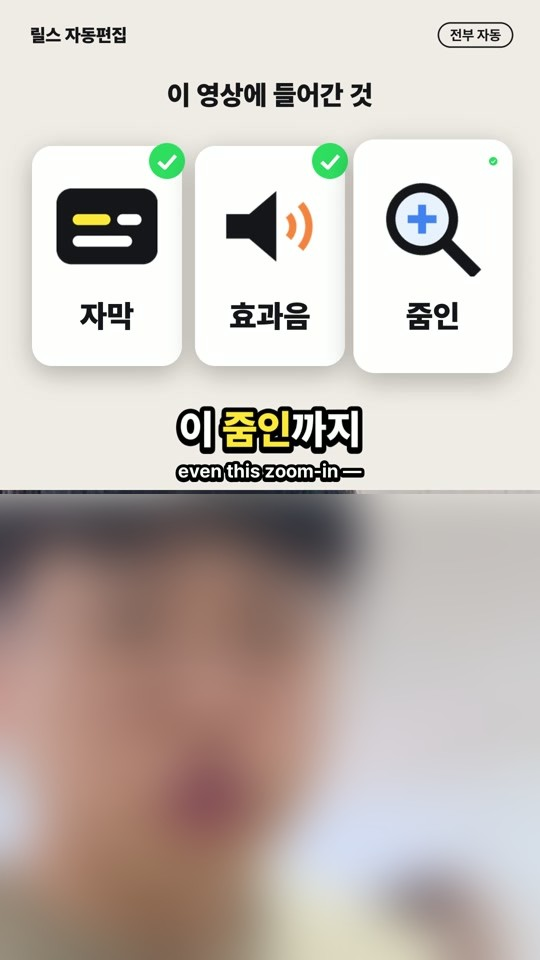

Just shoot.
Edit with one sentence.
Drop a video in a folder, tell Claude Code what you want, and it does the cuts, captions, motion graphics and sound effects. Built by a working video director for everyday use on real shoots.
Menu
Tap a title to open its guide for total beginners. More features are on the way.
01Reels auto-editCuts · Korean + English captions · motion graphics · sound effects
Guide for total beginnersYou do not need to know computers. No jargon. Just follow the steps from top to bottom.
Turns a talking video into a vertical Reel that is ready to post. It cuts out pauses and retakes, then adds captions, motion graphics and sound effects.
This Korean command means "Make a Reel".



Frames from a real Reel made with this kit.
Works best with Korean speech. Auto-edit listens to the video as Korean by default and writes Korean captions with an English line under them. Videos spoken in other languages have not been tested. Skin retouch (menu 02) works with any language.
What you need
- Claude Code (paid plan, Pro or higher. If you are new, start at Step 0 below)
- A computer (Windows or Mac) and internet
- A talking video (a vertical phone video is enough)
Before you start. This kit was built and tested by a Korean creator. The buttons you click are the same, but the commands below are Korean. Copy and paste them as they are. You can also try asking Claude in English, but that has not been tested.
Step 0 Open Claude Code for the first time
Already using Claude Code? Skip this. If you are new, this is the most important part.
- Download and install the Claude app. On your computer, go to claude.com/download, click the button for your computer (Windows or Mac), and run the file you downloaded.
- Open the app and sign in. Claude Code needs a paid plan (Pro or higher). On a free account you will be asked to upgrade.
- Make a folder named "릴스" on your desktop. Right-click an empty spot on the desktop → New → Folder (Mac: right-click → New Folder). The kit looks for this exact Korean name, which means "Reels", so copy it here and paste it as the folder name.
Every video you shoot goes into this folder. You can also skip this: the install in Step 1 creates the folder for you.
릴스 - Click Code in the Claude app. The app usually opens on the chat screen. Click Code at the top left to switch to Claude Code. If you only see icons, hover over them to see their names.
- Choose Local. There is a box for typing in the middle of the screen. Click the first button on the row just below it and choose Local. It means "work on my own computer".
- Connect the "릴스" folder. Click the folder button right next to it and choose Open folder…. In the window that opens, click Desktop on the left, click the 릴스 folder once, then click Select Folder (Mac: Open).
- Check that it is connected. If the folder button now says 릴스, you are done. You can start typing to Claude. You only connect once. Next time, just click Code.
If a window asks "Allow?" along the way, click Allow. Claude is asking whether it may work on your computer.
Step 1 Install (only once)
- Paste this one line into the typing box and press Enter. The Korean word at the end means "install this". Click "Copy", click the typing box once, then paste (Ctrl+V on Windows, ⌘+V on Mac).
Claude installs everything it needs. It takes about 5 to 10 minutes. If "Allow?" comes up several times, keep clicking Allow.
https://github.com/keun4jang/reels-kit 설치해줘 - When Claude says the install is finished, you are done. Close the app once and open it again. (If there was no "릴스" folder on your desktop, it is created now.)
Step 2 Make a Reel
- Move the video from your phone to your computer. Use whichever way is easiest.
- iPhone → Mac: pick the video in Photos, tap Share → AirDrop → your Mac
- Cable: connect the phone to the computer with its charging cable and copy the video file
- Cloud: upload it to Google Drive or iCloud, then download it on the computer
- Messaging apps often shrink videos. If you use one, send the file at original quality.
- Put the video in the "릴스" folder on your desktop. Double-click the 릴스 folder to open it and drag the video file into it. If you can see the video inside the folder, it worked. If there are several videos, the kit uses the most recent one.
- Open the Claude app and click Code at the top left. Check that the folder button says 릴스. If it shows another name, redo number 6 of Step 0.
- Paste this into the typing box and press Enter.
A one-minute video takes about 5 to 10 minutes. If "Allow?" comes up while you wait, click Allow.
릴스 만들어줘 - Find the finished Reel. A folder named "완성" ("Finished") appears inside the "릴스" folder on your desktop, with the Reel in it. Move that file to your phone and post it.
Step 3 Fix it by asking
Not happy with the result? Just tell Claude what to change, for example:
How to shoot for good results
- Hold the phone vertically
- Pause one second between sentences (the cuts come out cleaner)
- If you make a mistake, do not stop. Say that sentence again from the start (only the last take is kept)
- Shoot somewhere quiet, with a microphone if you can (the captions are more accurate)
Questions people ask
- Does it cost extra?
- The kit is free. It only uses your Claude Code plan's usage.
- Is my video uploaded somewhere?
- Editing happens on your computer. Claude does read the transcript and a few frames to check the result.
- Is the result perfect every time?
- No. There can be caption typos or awkward cuts. Watch it once before posting and tell Claude what to fix.
- The command does not work.
- Close Claude Code and open it again. If it still does not work, paste the install line from Step 1 once more.
The PDF is in Korean only. It may not open inside Instagram. If so, tap ⋯ at the top right and choose "Open in external browser". This page has the same content.
New features land on Instagram first
Every new feature gets its own Reel.
Follow along and it arrives in the same kit.